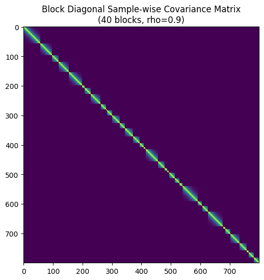
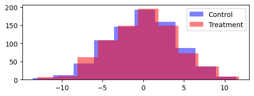

Comparing two samples using stambo

V1.1.5: © Aleksei Tiulpin, PhD, 2025
There are many cases, when we develop models other than classification or regression, and we want to compute scores per datapoint, and then find their mean. We may often want to compare just two samples of measurements, and stambo allows to do this easily too.
This example shows how to conduct a simple two-sample test. The example is synthetic, and we will just simply generate two Gaussian samples, and assess whether the mean of the second sample is greater than the mean of the first sample.
Importing the libraries
[1]:
import numpy as np
import stambo
import matplotlib.pyplot as plt
from scipy.linalg import block_diag
SEED=2025
stambo.__version__
[1]:
'0.1.6'
Data generation
[2]:
np.random.seed(SEED)
n_samples = 50
sample_1 = np.random.randn(n_samples)
sample_2 = np.random.randn(n_samples)+0.7 # effect size is 0.7
Sample comparison
Note that when it comes to a two-sample test, stambo does not require the statistic of choice to be a machine learning metric that is a subclass of stambo.metrics.Metric. Note that we have a non-paired design here (a regular two-sample test), so, it needs to be specified.
[3]:
res = stambo.two_sample_test(sample_1, sample_2, statistics={"Mean": lambda x: x.mean()}, non_paired=True)
---------------------------------------------------------------------------
KeyError Traceback (most recent call last)
Cell In[3], line 1
----> 1 res = stambo.two_sample_test(sample_1, sample_2, statistics={"Mean": lambda x: x.mean()}, non_paired=True)
File ~/Dev/stambo/stambo/_stambo.py:337, in two_sample_test(sample_1, sample_2, statistics, groups, alpha, n_bootstrap, seed, non_paired, silent)
329 else:
330 bootstrap_result = bootstrap_arrays(
331 arrays=(sample_1, sample_2),
332 statistics=statistics,
(...) 335 silent=silent
336 )
--> 337 result_final = pairwise_bootstrap_test(
338 samples=(sample_1, sample_2),
339 statistics=statistics,
340 bootstrap_results=bootstrap_result,
341 labels=None,
342 alpha=alpha,
343 )
345 results_return = {}
346 # This is a necessary post-processing step
347 # The pairwise bootstrap has only two models, so, the labels are not needed
File ~/Dev/stambo/stambo/_stambo.py:224, in pairwise_bootstrap_test(samples, statistics, bootstrap_results, labels, adjusted_p_value, alpha, n_bootstrap, silent)
220 result_final[s_tag][label] = {}
222 # And we report the p-value, empirical values, as well as the confidence intervals.
223 # The format in the documentation.
--> 224 b_res = compute_bootstrap_model_test(
225 bootstrap_results=bootstrap_results,
226 samples=samples,
227 i=i, j=j,
228 statistic=s_tag,
229 statistics_dict=statistics,
230 alpha=alpha
231 )
233 result_final[s_tag][label]["p_value"] = b_res["p_value"]
234 result_final[s_tag][label]["diff"] = b_res["diff"]
File ~/Dev/stambo/stambo/_stambo.py:71, in compute_bootstrap_model_test(bootstrap_results, samples, i, j, statistic, statistics_dict, alpha)
61 def compute_bootstrap_model_test(
62 bootstrap_results: Dict[str, npt.NDArray[float]],
63 samples: tuple[Union[npt.NDArray[int], npt.NDArray[float], PredSampleWrapper]],
(...) 67 statistics_dict: Dict[str, Callable],
68 alpha: float=0.05) -> Dict[str, Tuple[float]]:
69 r"""Computes the bootstrap test for a model comparison.
70 """
---> 71 n_bootstrap_i = len(bootstrap_results[statistic][:, i])
72 n_bootstrap_j = len(bootstrap_results[statistic][:, j])
73 n_bootstrap = n_bootstrap_i
KeyError: (slice(None, None, None), 0)
[ ]:
res
{'Mean': {'p_value': np.float64(0.17436512697460507),
'diff': np.float64(0.2377161467355364),
'ci_es': (np.float64(-0.09487459471684045), np.float64(0.576572599564563)),
'ci_s1': (np.float64(-0.1671848876765046), np.float64(0.33110024529537907)),
'ci_s2': (np.float64(0.07607755235809846), np.float64(0.5669838280353934)),
'emp_s1': np.float64(0.08127467643600941),
'emp_s2': np.float64(0.3189908231715458)}}
LaTeX report
[ ]:
print(stambo.to_latex(res, m1_name="Control", m2_name="Treated"))
% \usepackage{booktabs} <-- do not forget to have this imported.
\begin{tabular}{ll} \\
\toprule
\textbf{Model} & \textbf{Mean} \\
\midrule
Control & $0.08$ [$-0.17$-$0.33$] \\
Treated & $0.32$ [$0.08$-$0.57$] \\
\midrule
Effect size & $0.24$ [$-0.09$-$0.58]$ \\
\midrule
$p$-value & $0.17$ \\
\bottomrule
\end{tabular}
This example shows that for the data at hand we did not have samples to reject the null.
Grouped data
A very common scenario we should consider is when data is grouped (or clustered). For example, we have multiple datapoints from the same subjects.
Below is the simulation code that generates synthetic data for case when we have multiple datapoints from the same subject. To see if your data is grouped, you can plot a covaraince matrix of your data.
[ ]:
def generate_covariance(size, rho, sigma=1.0):
"""
Generates an AR(1) covariance matrix for a single block.
Formula: Cov(i, j) = sigma^2 * rho^|i-j|
"""
indices = np.arange(size)
# Calculate |i - j| matrix
diff = np.abs(np.subtract.outer(indices, indices))
# Apply AR(1) formula
cov_matrix = (sigma**2) * (rho**diff)
return cov_matrix
# --- Settings ---
n_groups = 40 # Number of independent blocks
N = 800
p = 4 # Number of predictors (features)
rho = 0.9 # Correlation strength within blocks (0 to 1)
noise_sigma = 1.0 # Standard deviation of noise
# --- 1. Generate Predictors (X) and True Coefficients (Beta) ---
np.random.seed(42)
X = np.random.normal(0, 1, size=(N, p))
beta = np.array([2.5, -1.0, 3.2, 0.5])
if N < n_groups:
raise ValueError("N must be greater or equal to the number of groups")
base = np.ones(n_groups, dtype=int)
remaining = N - n_groups
probs = np.random.dirichlet(np.ones(n_groups) * 0.9)
extra = np.random.multinomial(remaining, probs)
counts = base + extra
# Sanity check to ensure we can safely combine with X
assert counts.sum() == N, "Block sampling must result in exactly N samples"
group_errors_1 = []
group_errors_2 = []
block_covariances = [] # Storing these just to visualize later
subject_ids = []
for i in range(n_groups):
# Create covariance for this specific block
group_size = counts[i]
subject_ids.extend([i] * group_size)
sigma_block = generate_covariance(group_size, rho, noise_sigma)
block_covariances.append(sigma_block)
# Sample noise for this block: epsilon ~ N(0, Sigma_block)
# We use Cholesky decomposition for sampling: L * standard_normal
L = np.linalg.cholesky(sigma_block)
u = np.random.normal(0, 1, size=group_size)
e_block_1 = L @ u
u = np.random.normal(0, 1, size=group_size)
e_block_2 = L @ u
group_errors_1.append(e_block_1)
group_errors_2.append(e_block_2)
# Concatenate all block errors to create the full epsilon vector
epsilon_1 = np.concatenate(group_errors_1)
epsilon_2 = np.concatenate(group_errors_2)
# --- 3. Generate Target Variable (y) ---
# Here we set no difference (NULL is true)
group_1 = X @ beta + epsilon_1
group_2 = X @ beta + epsilon_2
if group_1.mean() > group_2.mean():
group_1, group_2 = group_2, group_1
print(f"Generated data with shape: X={X.shape}, y={group_1.shape}")
print(f"Structure: {n_groups} blocks of size {group_size}")
# --- Optional: Visualize the Full Covariance Matrix ---
# Construct full matrix just for visualization
Sigma_full = block_diag(*block_covariances)
plt.figure(figsize=(6, 6))
plt.imshow(Sigma_full, cmap='viridis', interpolation='none')
#plt.colorbar(label='Covariance')
plt.title(f"Block Diagonal Sample-wise Covariance Matrix\n({n_groups} blocks, rho={rho})")
plt.show()
Generated data with shape: X=(800, 4), y=(800,)
Structure: 40 blocks of size 18

Grouped data & paired design
Let us now cover another common case: we have a number of subjects with multiple measurements taken before and after treatment. We want to estimat the treatment effect, or rather - confidence intervals on it. This case is highly related to comparing two models. Model 1 could be seen as control, and improvements done on it (Model 2) could be seen as treatment.
We now utilize our earlier generated data from the clustered design.
[ ]:
plt.figure(figsize=(6, 2))
plt.hist(group_1, label="Control", color="blue", alpha=0.5)
plt.hist(group_2, label="Treatment", color="red", alpha=0.5)
plt.legend()
plt.show()

Let us now first run the test without specifying the groups.
[ ]:
res = stambo.two_sample_test(group_1, group_2, statistics={"Mean": lambda x: x.mean()}, seed=SEED)
print(stambo.to_latex(res, m1_name="Control", m2_name="Treatment"))
% \usepackage{booktabs} <-- do not forget to have this imported.
\begin{tabular}{ll} \\
\toprule
\textbf{Model} & \textbf{Mean} \\
\midrule
Control & $-0.08$ [$-0.37$-$0.21$] \\
Treatment & $0.05$ [$-0.24$-$0.35$] \\
\midrule
Effect size & $0.13$ [$0.04$-$0.23]$ \\
\midrule
$p$-value & $0.01$ \\
\bottomrule
\end{tabular}
What we can se above, is that the test detects an effect where thereis actually no effect
[ ]:
res = stambo.two_sample_test(group_1, group_2, statistics={"Mean": lambda x: x.mean()}, groups=subject_ids, seed=SEED)
# Let us add more digits to see the p-value clearer
print(stambo.to_latex(res, m1_name="Control", m2_name="Treatment", n_digits=4))
% \usepackage{booktabs} <-- do not forget to have this imported.
\begin{tabular}{ll} \\
\toprule
\textbf{Model} & \textbf{Mean} \\
\midrule
Control & $-0.0780$ [$-0.4026$-$0.2338$] \\
Treatment & $0.0543$ [$-0.2731$-$0.3990$] \\
\midrule
Effect size & $0.1323$ [$-0.1588$-$0.4641]$ \\
\midrule
$p$-value & $0.4111$ \\
\bottomrule
\end{tabular}
Once we have specified the groups, we get very tight 95% CIs around the true effect (0.5), showing that it is really positive. Moreover, we are able to reject the null, since our bootstrap procedure closely resembles the data generating process.